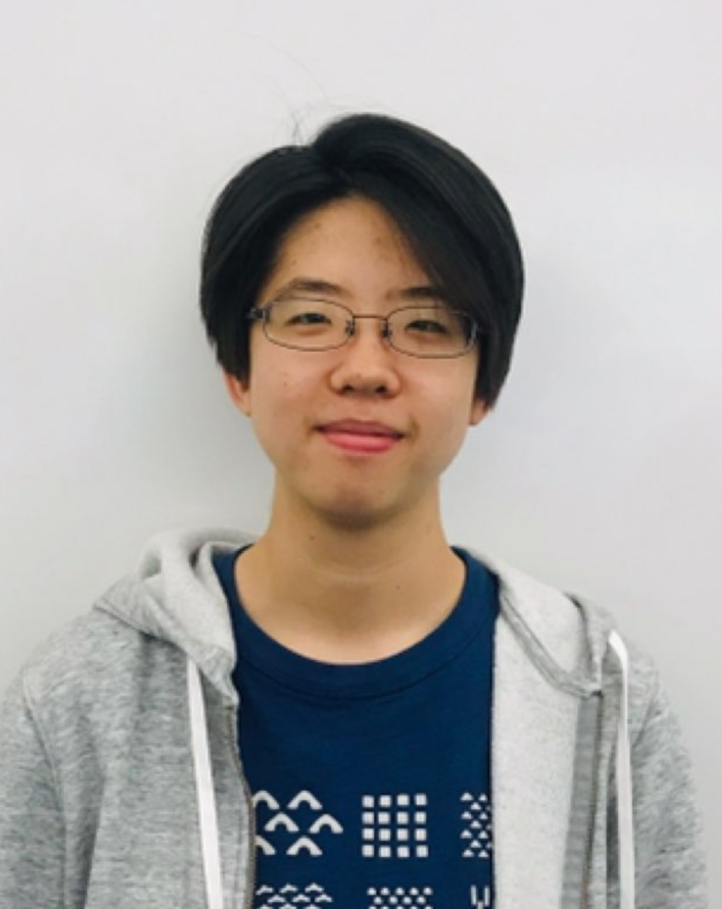

Lederman Fellow, Fermilab · Batavia, Illinois
I am a particle physicist interested in collider physics and quantum sensing. My research focuses on searches for unconventional signatures at the CMS experiment at the LHC, precision timing detectors for the HL-LHC upgrade, and developing superconducting nanowire sensors for high energy particle and dark matter detection.
I am currently a Lederman Fellow at Fermilab. I completed my Ph.D. in Physics at the California Institute of Technology in 2024 and my B.S. in Physics at the Massachusetts Institute of Technology in 2018.

Probing new physics at the LHC by using unconventional signatures to search for long-lived particles that travel a measurable distance before decaying. The displaced signatures that I've worked on include muon detector showers (MDS), heavy stable charged particles (HSCP), and delayed & trackless jets.
Develop and characterize large-area superconducting microwire arrays for its applications in dark matter and collider experiments.
Characterized silicon photomultipliers, LYSO crystals, and ASIC readout board for the new precision timing detector that will be installed in CMS to prepare for HL-LHC.
Selected news articles about my research.